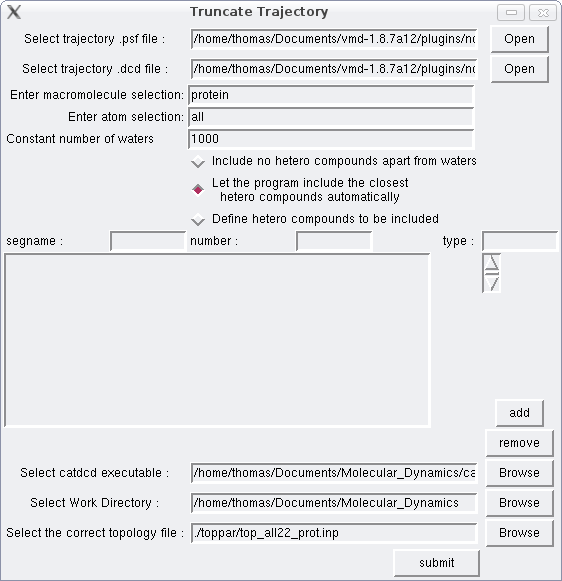
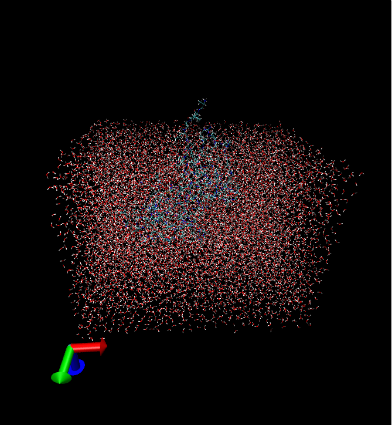
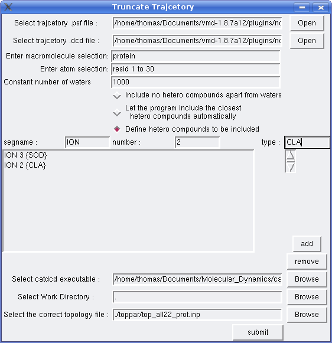
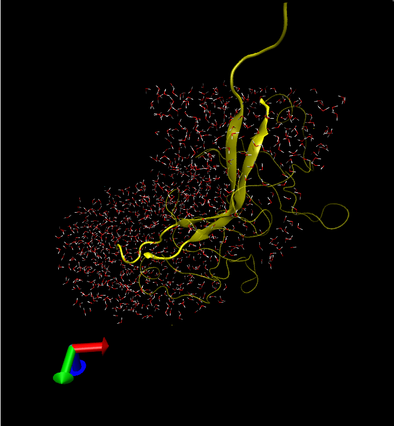

Large trajectories have a lot of redundant hetero compounds which augments their size and make calculations cumbersome. Truncate Trajectory will help you get rid of these compounds. It currently works only with parallelepiped unit cells and periodic boundary conditions as it detects periodic contacts with hetero compounds from the 26 nearest cells, and incorporates these compounds to the final trajectory. So don't be surprised if you see a bunch of isolated waters in the truncated trajectory. The dimensions and angles (a, b, c, alpha, beta, and gamma) should be also provided in the original trajectory files.
You can define how many water molecules to keep and optionally the kind and number of non-water hetero compounds. The program will create in the designated work directory two files, truncated_trajectory.psf and truncated_trajectory.dcd which comprise the truncated trajectory.
Set the paths to your .psf and .dcd files. In the macromolecule selection field type “protein” -provided your trajectory contains a protein-, in the atomselection field type “all”, and in the constant number of waters field “1000”. Click on the first or second radio button, set the path to catdcd executable and the work directory where the process will take place. In this example your macromolecule -which will be retained in the truncated trajectory- is a protein so the default topology file should work, otherwise select the appropriate one inside toppar folder. Then submit. The total computation time will depend on the size of your trajectory. At the end 2 files will be created, truncated_trajectory.psf and truncated_trajectory.dcd. These files comprise the truncated trajectory so make sure to rename them if you intend to conduct another such process in the same work directory.
Now lets say you want to keep specific types of non-water hetero compounds. Provided your trajectory contains sulphur and chlorine ions with atom type representations SOD and CLA respectively, the follow the same steps as in example 1, apart from those regarding the atomselection field and radio buttons. This time type “resid 1 to 30” -provided you protein has at least some of these residues- and then click on the 3rd radio button. In the segname, number, type fields write “ION”, 3, “SOD” and then click on add button. Then write “ION”, 2, “CLA” and click on add button again. If you have made any mistake you can remove the wrong entry by selecting it and then clicking on the remove button. If you wish to add other non-water hetero compounds with more than one atom types, then write those atom types in the type field separated by ONE space character.At the end click on submit button and wait till the process is finished. The program will keep only the closed 1000 waters, 3 sulphur and 2 chlorine ions, to residues 1 to 30 of your protein.

I'm not sure if the program works with composite atomselection keywords. i.e. "protein or nucleic" if your system contains protein residues and nucleic acid residues. The plugin may not also work with other types of macromolecules as a different topology file may be required (the default is top_all22_prot.inp and works for proteins). In that case select the appropriate topology file from toppar folder which is provided along with the source code, and if you still encounter problems please email me. Finally tcllib (Tcl Standard Library) should be installed -I guess you have done that already.
Thomas Evangelidis (te8624@mbg.duth.gr)